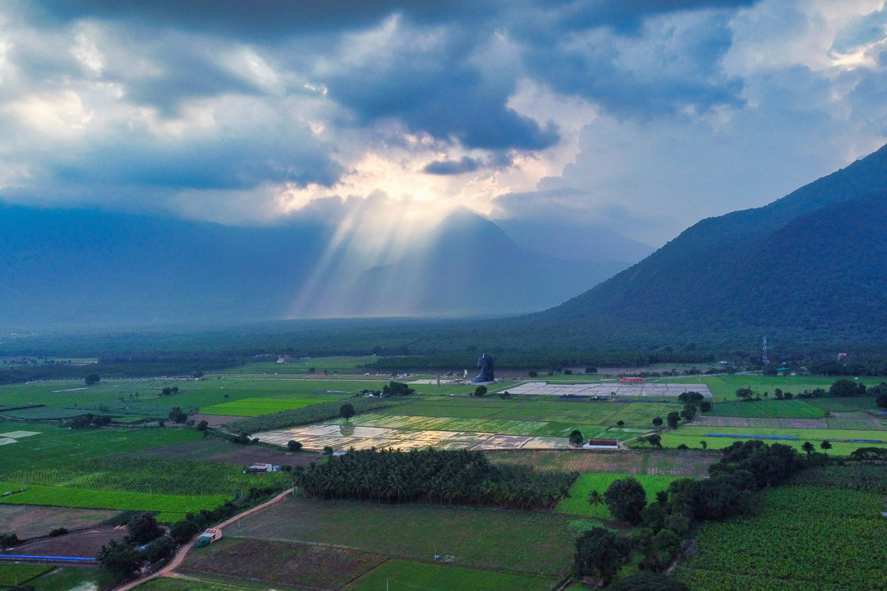

ACCELERATOR WORKSHOP · INDIA 2026
Build and monitor compost.
Prepare biological amendments.
Examine microorganisms under a microscope.
Apply them in the field.

ACCELERATOR WORKSHOP · INDIA 2026
Prepare biological amendments.
Examine microorganisms under a microscope.
Apply them in the field.